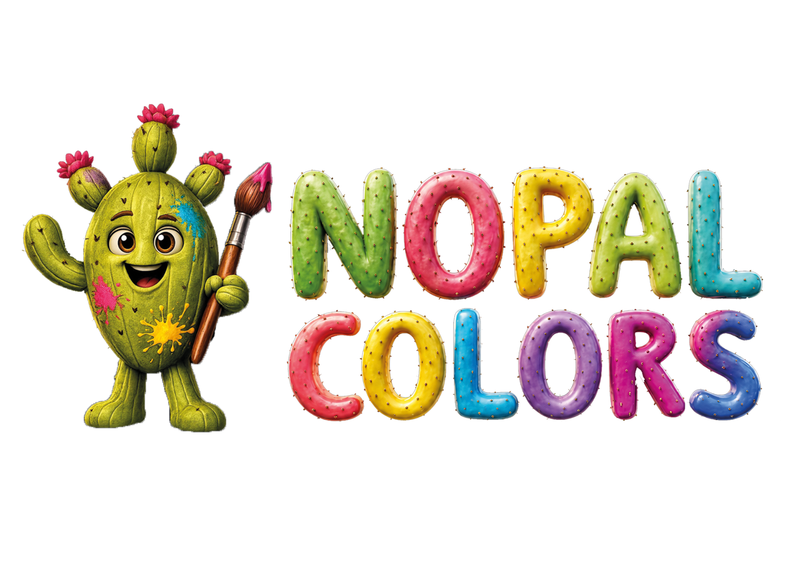
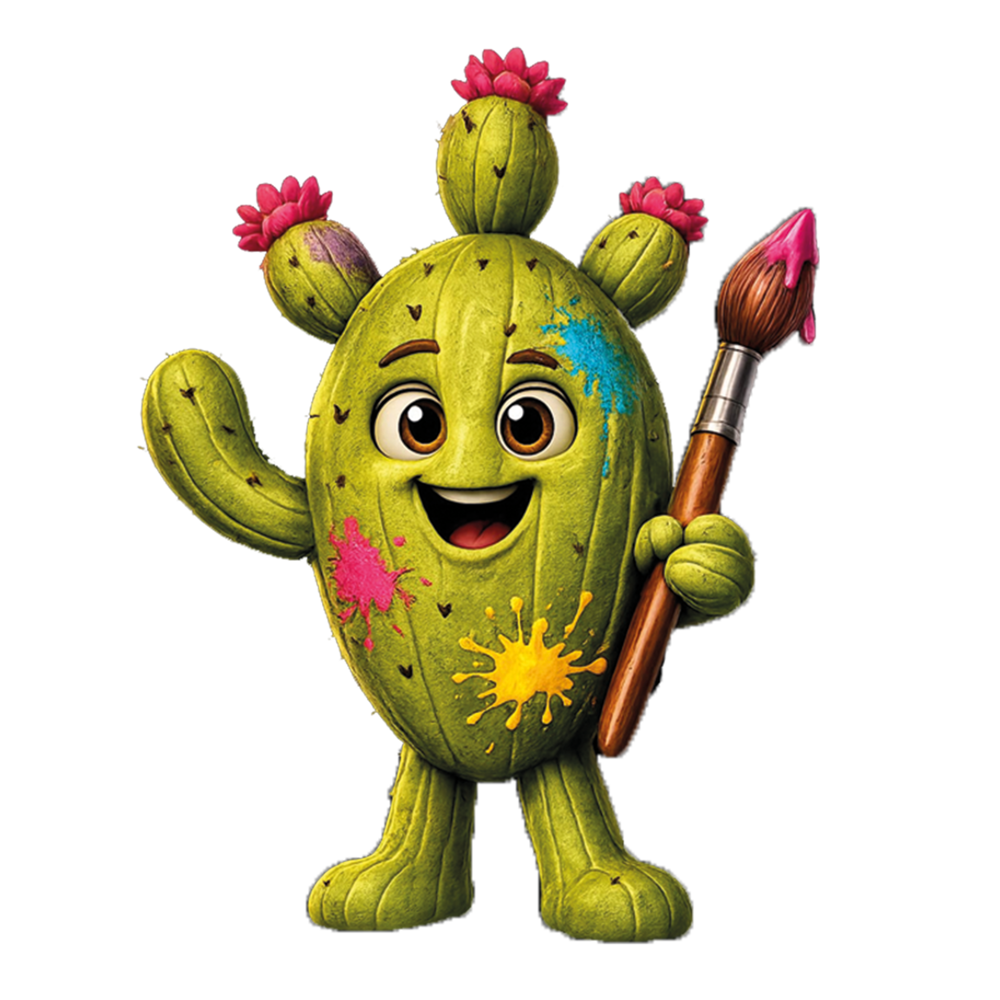
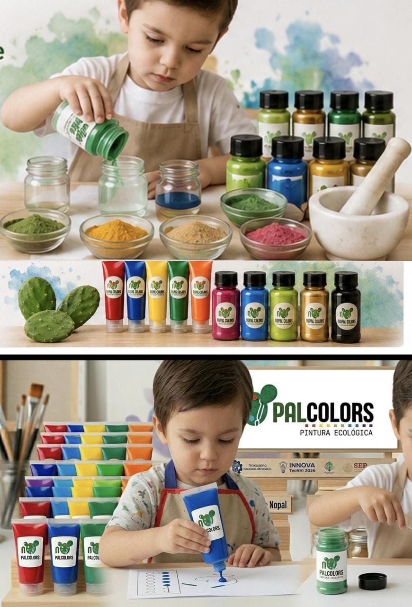
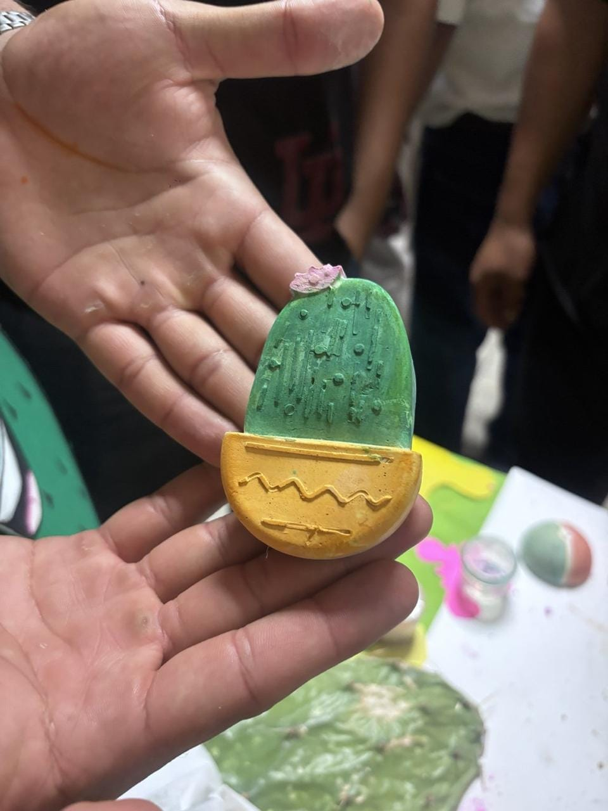
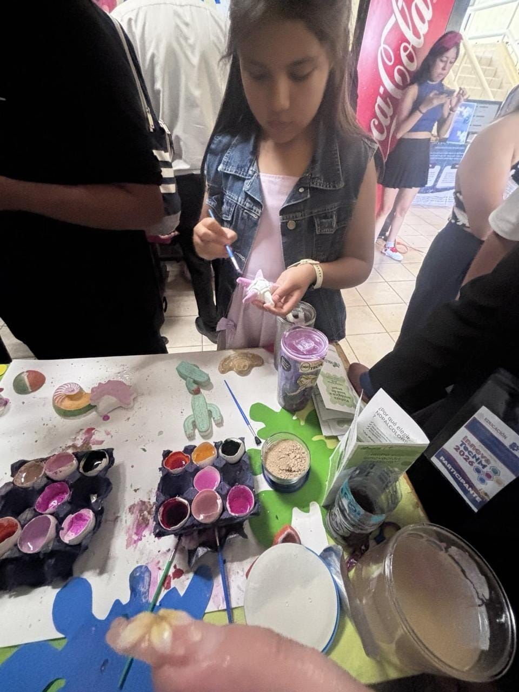

Aprovechamiento
Exploramos el potencial de un recurso natural abundante y cercano.

NopalColors explora el uso del nopal como base para desarrollar una propuesta de pintura con enfoque ecológico.
Conoce el proyecto ↓
NopalColors nace de una pregunta sencilla: ¿cómo podemos aprovechar los recursos que nos ofrece la naturaleza para crear nuevas alternativas?
El proyecto toma como punto de partida el mucílago del nopal y lo lleva al mundo de la pintura, combinando creatividad, investigación y una visión de aprovechamiento responsable.
El nopal forma parte de la identidad y de los paisajes de México. NopalColors busca darle una nueva aplicación dentro de una propuesta enfocada en la creatividad y el cuidado del entorno.
Exploramos el potencial de un recurso natural abundante y cercano.
Una propuesta que pone al medio ambiente en el centro de la conversación.
Convertimos la innovación en una experiencia que invita a crear y experimentar.
Una forma divertida de acercar el color y la creatividad a niñas y niños.



Un proyecto que conecta naturaleza y creatividad.
Es una solución ecológica segura y accesible que transforma la manera de crear y cuidar nuestro entorno.
NopalColors representa una búsqueda por encontrar nuevas maneras de aprovechar lo que tenemos a nuestro alrededor. Es una propuesta donde la innovación, la educación ambiental y la creatividad pueden encontrarse en un mismo proyecto.
Para información sobre el proyecto, presentaciones o colaboración, ponte en contacto con nosotros.